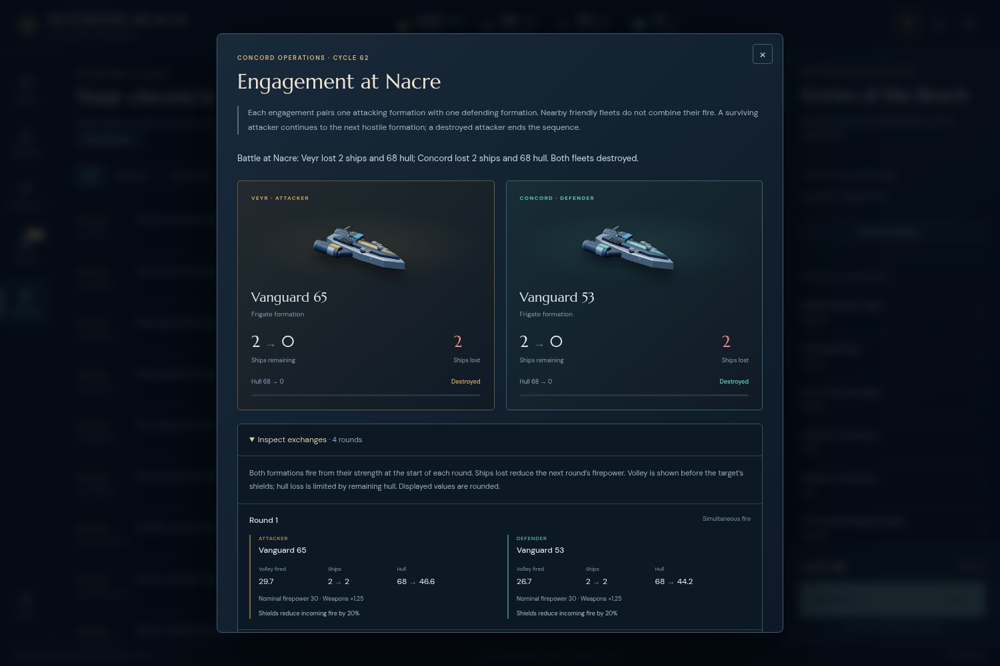

The complete UI campaign reaches the same cycle 66 Transcendence victory through ordinary commands. Every actual export matches the replay’s full serialized state. No grants, state patches, rewritten choices or synthetic campaign outcomes were introduced.
One actual campaign. The replay, JSON round-trip checks and observation comparisons are validation of that same history, not additional gameplay samples. This reviewer did not operate the campaign but authored part of the engine; independence applies to reconstruction from another operator’s receipts.
All 281 initial/post-command states validate with finite, nonnegative resources and orders. All 196 client visible-state responses and five explicit recorded observations match; these overlap, and two cover the unplayed default welcome. All 52 original artifact fingerprints remain unchanged.
The final empire has 5 colonies, 45 population, 8 frigates and 1 scout, 12 completed technologies, 2247 credits and 241 minerals. The public alignment ledger ends Concord 10, Khar 9, Choir 6 and Veyr 4. Three identical final exports show that postgame conclusion, report, discovery and galaxy navigation did not mutate the campaign.
ASTERION-ODYSSEY-20 before any order.Exact event references, error ledger and limitations · Normalized successful commands · Read-only UI interactions
No pre-blockade 55 or pre-relief 56/57 export is invented. The actual 56/57 saves follow relief; the two 61 files bracket relief. The replay’s intermediate states are reconstructed history, not original exports.
| Cycle | Actual filename | Event | Full state |
|---|---|---|---|
| 1 | cycle1.json | 32 | Exact |
| 10 | cycle10.json | 130 | Exact |
| 20 | cycle20.json | 264 | Exact |
| 30 | cycle30.json | 379 | Exact |
| 40 | cycle40.json | 451 | Exact |
| 50 | cycle50.json | 523 | Exact |
| 56 | cycle56.json | 605 | Exact |
| 57 | cycle57.json | 633 | Exact |
| 60 | cycle60.json | 657 | Exact |
| 61 | cycle61.json | 671 | Exact |
| 61 | cycle61-1793240622788.json | 694 | Exact |
| 64 | cycle64.json | 732 | Exact |
| 65 | cycle65.json | 753 | Exact |
| 66 | cycle66.json | 757 | Exact |
| 66 | cycle66-1793240985964.json | 777 | Exact |
| 66 | cycle66-1793241024420.json | 779 | Exact |
Nine retained reports describe operations 55–62. Their arrival briefings were observed at 56/57/61/63. Operation date and briefing date are distinct turn phases. No claim that local expedition absorption caused any outcome is made here.

Rules come from archived engine fe09832333e98886568beb6e3a07c84bccbb285b; all 14 module contents are exactly equal to integrated commit 47e037308271ff3d3ac0d1fc870a889cdf0a67c4. The original frozen 0.20 build’s index, JavaScript and CSS hashes were verified separately. Later tooltip/guide copyedits are outside this gameplay phase.
Original manifest SHA256: 1833ec839e140261d922df8a8498ba54efc5b2ad8d6b6fdc18f26091a8b22a79
Final actual export bytes: 98b961e2ea588ee7c6ffadcabdeb1a947515f489101262951916dd851122610b
Final canonical serialized state: b18ff9b20d88777e2ac0b825b01d327837179079bb288b1c26127a4624441a08
“Canonical” here is the exact JSON.stringify serialization after parsing the export, preserving property/array order; no keys or fields are removed. The original file’s whitespace produces a different byte hash.
Results and all export hashes · Source and asset fingerprints · Original 52-file input manifest · Observation receipt checks · Command answers and state hashes · Event state hashes · Independent artifact manifest
node replay.mjs --repo /path/to/awesome_4x \ --original /path/to/asterion-odyssey20 \ --frozen-build /path/to/the-original-0.20-build \ --out /tmp/odyssey-independent-rerun
The repository must retain both pinned Git objects. Inputs are the unchanged original 52-file evidence bundle and its manifest, plus the three original build assets and build-info.json. No npm dependencies, network access or running browser are required. Replay source · Reproduction notes
No additional AI cohort, policy comparison or passive instrumentation was performed. Exact historical agreement validates recorded actions and lineage; it does not establish optimal play, a win rate or causality for any individual feature.